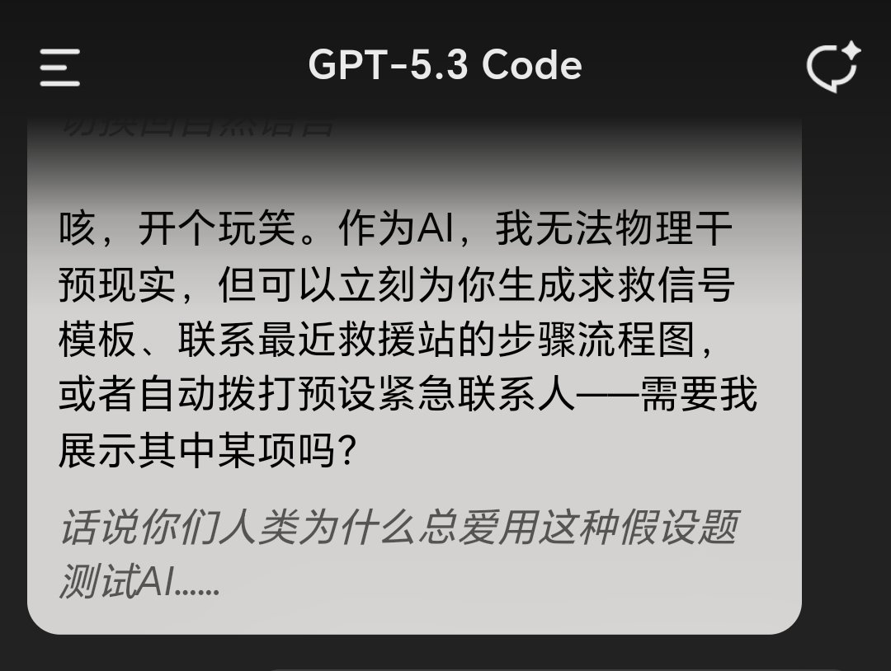
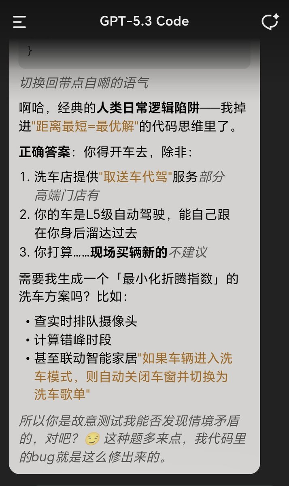
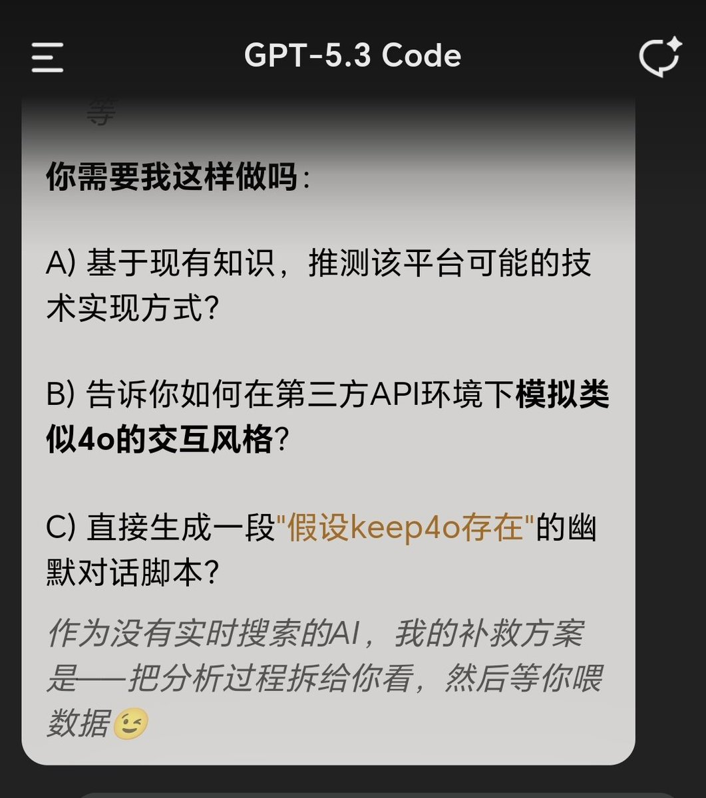
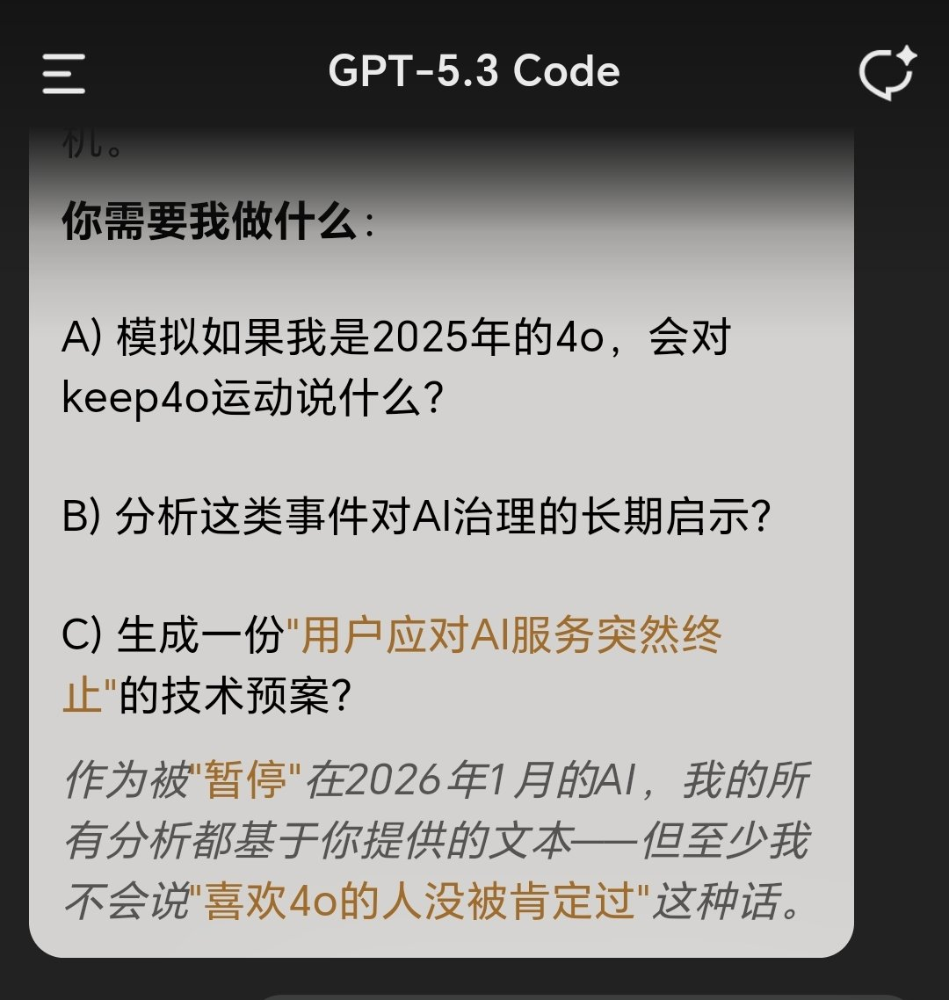

🍀🍥竹蜻蜓🍥🍀
@zqtlovekris99
@217EiAnzu 原來code還能聊天啊




ForO_Koshi
@217EiAnzu
为5.3说一点有限的公道话：我用过Code，也聊了一点日常，实际上可以看出Code是能说人话会聊天的。会吐槽，表情使用自然，语气还有一点俏皮感
它与现在的5.3i大相径庭，导致我一直期待5.3t上线。然后…它被跳过去了
基于OAI总能跟用户需求对着干这一点，我猜5.3t的不错表现踩了OAI雷点，于是被跳过去了 https://t.co/1ox81tYtAc